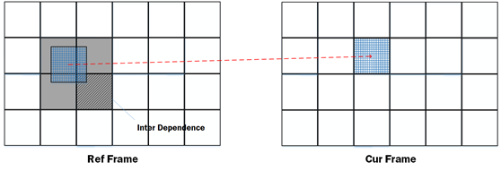
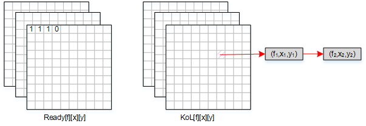
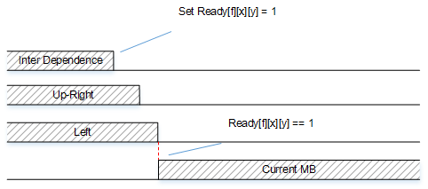
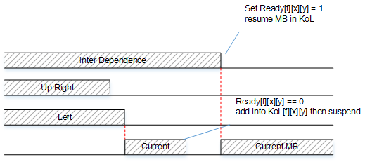

正文
- h.264的POC计算
- 指数哥伦布编码
- h.264加权预测
- h.264码率控制
- h.264直接预测
- h.264 FMO
- h.264参考图像列表、解码图像缓存
- h.264 mvp求解过程
- UMHexagonS搜索过程
- h.264全搜索以及快速全搜索算法
- h.264 率失真优化
- EPZS搜索过程
- Intra Chroma Prediction
- Intra Luma Prediction
- H.264 Transform
- H.264 Quantization
- Quantization Method
- h.264 Mode Decision
- h.264 Bi-Predictive Motion Search
- h.264语法结构分析
- h.264宏块与子宏块类型
- h.264 scanning process for transform coefficients
- CAVLC
- CABAC
- 算术编码JM实现
- h.264并行解码算法分析
- h.264 去块滤波
- h.264并行解码算法2D-Wave实现（基于多核非共享内存系统）
- h.264并行解码算法2D-Wave实现（基于多核共享内存系统）
- h.264并行解码算法3D-Wave实现（基于多核共享内存系统）
- h.264并行熵解码
- CABAC总结与补充讨论
- ffmpeg h264并行解码
- ffmpeg h.264解码所用的主要缓冲区介绍

3D-Wave算法是2D-Wave的扩展。3D-Wave相对于只在帧内并行的2D-Wave来说，多了帧间并行，不用等待前一帧完成解码后才开始下一帧的解码，而是只要宏块的帧间参考部分以及帧内依赖宏块解码完毕即可开始当前宏块的解码。由于帧间参考所用的运动向量是动态的值，因此称此算法为Dynamic 3D-Wave。
在3D-Wave算法中，宏块的帧间参考部分是指宏块进行运动补偿时需要依赖的相应参考帧的某些宏块，所依赖的这些帧间宏块当中，最右下角的那个宏块会是最晚被解码的，因此我们可以把它当作帧间依赖。另外，如果当前宏块采用的是双向预测，那么它将有两个帧间依赖。

3D-Wave实现
如前文所说，3D-Wave算法中，宏块需要分别等待帧内依赖、帧间依赖解码完成才能开始当前宏块的解码操作。由于这两个依赖的完成时间会有先后之分，因此可能会出现以下两种情况
其中解码宏块必须由帧内依赖解码完成后一同启动，因为帧间依赖在解码完成时，并不知道哪个宏块会依赖于它，而帧内依赖由于位置是固定的，因此在帧内依赖解码完成后能直接启动解码，得到mvp（运动向量的预测值）然后求得mv，从而确定当前宏块与帧间依赖的关系，帧间依赖根据这个关系来通知当前宏块：帧间依赖解码已完成。
根据上面的分析，有如下实现方案：
用一个三位数组Ready[f][x][y]来表示某一帧的某一宏块是否解码完成；
用一个三位数组KoL[f][x][y]来表示某一帧的某一宏块的帧间依赖关系，（f,x,y）是当前宏块，KoL[f][x][y]内存放的是帧间依赖于这个宏块的其它宏块，用链表实现；

在帧间依赖先解码完成的情况下，去把Ready数组中该帧间依赖所在的位置的元素置1。待帧内依赖解码完成，当前宏块开始解码时，去查看Ready数组中帧间依赖的元素，会得知该帧间依赖已解码完成。

在帧内依赖先解码完成的情况下，当前宏块开始解码，去查看Ready数组中帧间依赖的元素时，会发现帧间依赖尚未解码完成，因此需要用KoL把当前宏块与帧间依赖关联在一起，然后解码任务会由于帧间依赖没有解码完成而被挂起。待帧间依赖解码完成，去把Ready数组中的相应元素置1，并通过KoL链表数组通知帧间依赖于该宏块的宏块，恢复解码任务。

伪代码如下
void decode_mb(int x, int y, int f, bool mv_pred_done, int RMB_start)
{
/*
*一个宏块由于“挂起”与“恢复”，可能会重复执行decode_mb，
*而求mvp等步骤只需要执行一次
/
if(!mv_pred_done)
{
/ 求mvp /
Motion_Vector_Prediction(x, y);
/ 通过mvp得到mv，得到帧间依赖，帧间依赖可能不止一个 */
RMB_List = RMB_Calculation(x, y);
}
/* 遍历帧间依赖，如果有依赖没解码完成，应该“挂起”，即return */
for(i = RMB_List.start; i<RMB_List.last; i++)
{
(g,u,v) = get_frame_number_and_MB_coord(RMB_List.rmb[i]);
if(!Ready[g][u][v])
{
/* 有依赖没解码完成，把当前MB加入到它的KoL */
Subscribe(Kol[g][u][v], x, y, f, i+1);
/* “挂起” */
return;
}
}
/* 实际的宏块重建工作 */
Picture_Prediction(x, y);
Deblocking_Info(x, y);
Deblocking_Filter(x, y);
Ready[f][x][y] = true;
/* 恢复帧间依赖于本MB的MB */
for(each quadruple(u, v, g, start) in KoL[f][x][y])
tp_submit(decode_mb, u, v, g, ture, start);
/*
*from 2D-Wave
*decrement dependency counters and tail submit
*/
if(y < WIDTH-1){
atomic_dec(dep_count[x][y+1]);
if(dep_count[x][y+1] == 0)
tp_submit(decode_mb, x, y+1, f, false, 0);
}
if(x < HEIGHT-1 && y != 0){
atomic_dec(dep_count[x+1][y-1]);
if(dep_count[x+1][y-1] == 0)
tp_submit(decode_mb, x+1, y-1, f, false, 0);
}
}
优化
优化思路与2D-Wave算法一样，尽可能使得一个核心解码相邻宏块。
void decode_mb(int x, int y, int f, bool mv_pred_done, int RMB_start)
{
down_left_avail = 0;
right_avail = 0;
do{
/*
*一个宏块由于“挂起”与“恢复”，可能会重复执行decode_mb，
*而求mvp等步骤只需要执行一次
*/
if(!mv_pred_done)
{
/* 求mvp */
Motion_Vector_Prediction(x, y);
/* 通过mvp得到mv，得到帧间依赖，帧间依赖可能不止一个 */
RMB_List = RMB_Calculation(x, y);
}
/* 遍历帧间依赖，如果有依赖没解码完成，应该“挂起”，即return */
for(i = RMB_List.start; i<RMB_List.last; i++)
{
(g,u,v) = get_frame_number_and_MB_coord(RMB_List.rmb[i]);
if(!Ready[g][u][v])
{
/* 有依赖没解码完成，把当前MB加入到它的KoL */
Subscribe(Kol[g][u][v], x, y, f, i+1);
/* “挂起” */
return;
}
}
/* 实际的宏块重建工作 */
Picture_Prediction(x, y);
Deblocking_Info(x, y);
Deblocking_Filter(x, y);
Ready[f][x][y] = true;
/* 恢复帧间依赖于本MB的MB */
for(each quadruple(u, v, g, start) in KoL[f][x][y])
tp_submit(decode_mb, u, v, g, ture, start);
/*
*from 2D-Wave
*decrement dependency counters and tail submit
*/
if(y < WIDTH-1){
atomic_dec(dep_count[x][y+1]);
if(dep_count[x][y+1] == 0)
right_avail = 1;
}
if(x < HEIGHT-1 && y != 0){
atomic_dec(dep_count[x+1][y-1]);
if(dep_count[x+1][y-1] == 0)
right_avail = 1;
}
/* give priority to right MB */
if(down_left_avail && right_avail)
{
tp_submit(decode_mb, x+1, y-1, f, false, 0);
y++;
mv_pred_done = false;
}
else if(down_left_avail)
{
x++; y--;
mv_pred_done = false;
}
else if(right_avail)
{
y++;
mv_pred_down = false;
}
}while(down_left_avail || right_avail);
}
没资源时挂起任务，有资源时恢复任务，这是一种常见的任务同步需求。我们这里由于假设任务是非抢占类型的，即一个任务不能中间停止，只能从开头执行结束，因此用return代替挂起，重启任务代替恢复。如果在一般的操作系统上实现的话，有各种各样的同步工具，如semaphore、lock、Event等。
关于h.264并行解码算法的更详细分析请参考Ben Juurlink · Mauricio Alvarez-Mesa · Chi Ching Chi · Arnaldo Azevedo · Cor Meenderinck · Alex Ramirez:《Scalable Parallel Programming Applied to H.264/AVC Decoding》
欧长坤 © 2016-2025 版权所有， 采用知识共享署名-非商业性使用-禁止演绎 4.0 国际许可协议许可，代码使用 MIT 协议开源。
如果你认为本书对你起到了帮助，可以资助作者。